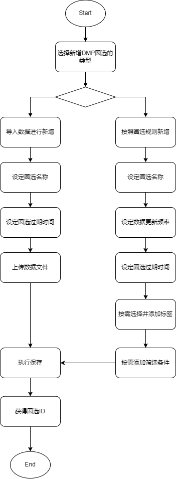
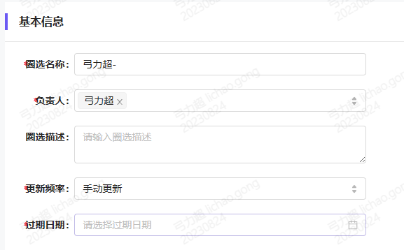
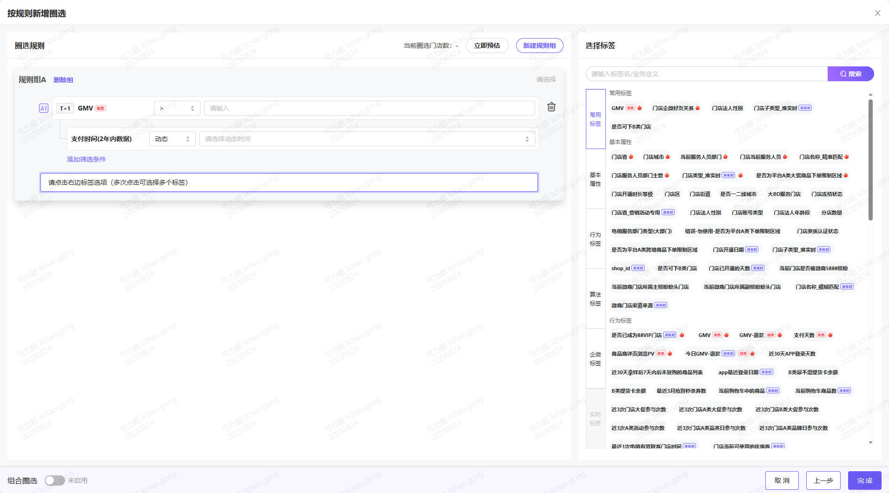
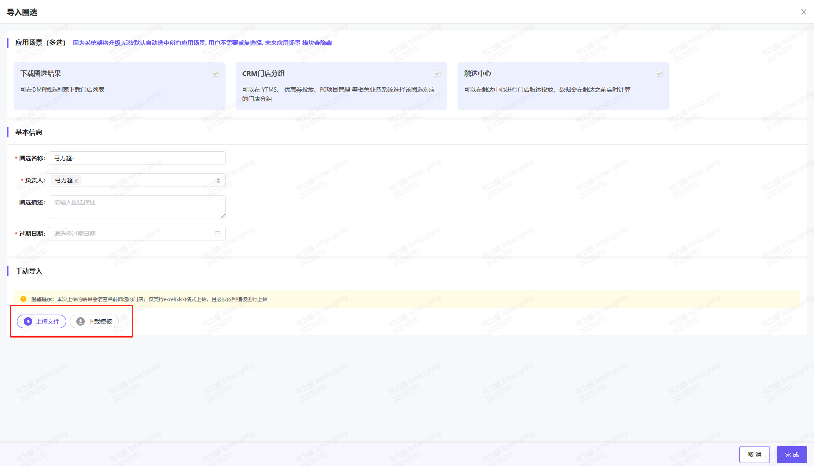
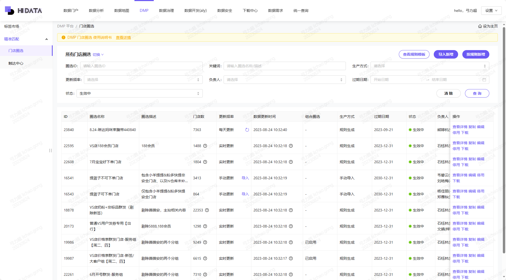
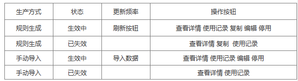
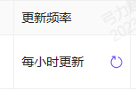
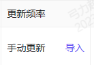

Created by 未知用户 (lichao.gong), last modified on 2023-08-24
业务流程-DMP圈选新建

功能简述-新建DMP圈选任务
| 特征 | 可应用场景 | 数据量上限 |
|---|
| 导入类型 | - 根据指定线下Excel表头进行数据导入
- 无法结合标签使用
- 依赖人工更新数据
| 下载圈选 门店分组 触达中心 | 等同于平台门店体系门店真实门店上限 ——非库内门店无法导入 |
| 规则类型 | - 可以通过组合搭配多个标签完成圈选
| 等同于平台门店体系门店真实门店上限 |
| 模板类型 | - 逻辑和“规则类型”完全一致，仅仅是复制已有模板。
| 等同于平台门店体系门店真实门店上限 |
新建DMP圈选-按规则新增
任务基础信息录入

| 功能 | 截图 | 功能点 | 需注意逻辑 |
|---|
| 圈选更新频率 | | 选项可见性 | - “手动更新”和“每天更新”默认全员可见可选。
- “实时更新”和“每小时更新”，作为2个单独权限点，开启后方可看见和使用。原因是pd把关实际需求场景，从而使得系统性能一定程度上得到保证。
- h+1-权限点编码：dmp_cluster_nrt_upadte
- 实时-权限点编码：dmp_cluster_rt_upadte
- 需要走hioa权限审批流程开通。
|
| 圈选过期日期 | | 过期前后提醒 | 1. 过期预警 每天北京时间早上11点,自动判断是否有 "生效" 且 过期日期 为 明天 或 未来第五天 的圈选.如果有,则推送对应的负责人钉钉消息 例如, 现在是北京时间 8月16日11点, 则对过期时间为 8月17日 或 8月21日的圈选任务发送钉钉消息 2. 过期处理 每天24点,自动判断是否有 "生效" 且 过期日期为 当天 的门店圈选. 并将对应的 "圈选" 状态全部变更为 "已失效". 取消对应圈选的 "自动更新" 以及相关的可操作的按钮. |
| 设定负责人 |
|
| - 除了创建人之外，负责人名单增加对应人员后，该人员可以对任务进行编辑修改。
|
任务圈选条件设定

| 功能 | 截图 | 功能点 | 需注意逻辑 |
|---|
| 设置规则组 | | 规则组数量 | - 单个圈选，规则组最多10个，至少1个。
- 单个规则组内，最大支持20条规则同时存在（也就是20个标签）
|
| | 规则组关系 | - 在一个圈选任务中，多个规则组之间，只能公用最多一种数据关系。
- 用户可以选择三种关系。
- 且关系，取该任务中，全部规则组条件的并集。
- 或关系，取该任务中，全部规则组条件的交集。
- 排除关系，默认将第一个规则组作为基础条件，其他规则组（1个或者多个）均只能作为剔除条件。
|
| 选择标签 | | 标签搜索 | - 搜索项支持名称模糊搜索。
- 点击某个标签，将会自动添加到左侧规则组中。
- 多个规则组存在时，想往哪个规则组加，需要点击按钮“选择标签”。（见左图）
|
标签设定
|
| 标签类型 | - 一共两种，动态标签和静态标签。具体区别参考PRD demo
|
| 具备筛选条件的标签 | - 动态类型标签支持多个筛选条件的设定。
- 每个动态标签可使用的筛选条件，配置页面可点击 配置筛选条件
|
| 不可删除的标签项 | - 部分用户所有的新建圈选任务时，会自带一些筛选条件，且不可删除。这是因为根据岗位配置了权限，如下：
- 门店圈选-只能筛选我服务的门店
- 门店圈选-只能筛选我的部门服务的门店
- 门店圈选-只能筛选 企微活跃门店
- 这些不可删除的筛选条件，默认存在于每个规则组中。
|
| 组合圈选 | | 组合数量限制 | - 组合圈选数量不能超过8个
|
| 可选择的圈选 | - 可选的圈选范围，和dmp圈选任务列表中，用户可见的任务集合，保持一致。
- 此处不展示也不可选择的是：
- “失效中”的圈选。
- 已经开启组合圈选的任务，不能被作为组合之一，被选入另一个圈选任务。
|
| 保存并提交 |
|
| - 提交后，系统会立即执行跑一次数据。
|
新建DMP圈选_导入新增

| 功能点 | 需注意逻辑 |
|---|
| 提交模板 | - 需要使用下载的模板进行填写。
- xlsx格式。
- 仅支持一个sheet，门店id
|
| 提交后系统校验内容 | - 所有必填项是否都有填写. 包括上传文件.
- 门店id是否真实，是否属于海拍客门店库
|
| 提交后系统校验结果 | - 钉钉提醒导入结果。
- 成功。
- 文件格式失败。
- 门店id是被失败
- 异常表格内容
|
| 更新机制 | 全量覆盖。 |
查看DMP圈选列表

列表功能简述
| 功能点 | 截图 | 功能重点逻辑 | 备注 |
|---|
| 圈选任务查看范围 | | - 此处支持查看范围的选项，一个是 "所有门店圈选". 一个是 "我的门店圈选"
- 默认 当前页面的菜单权限, 仅包含 "我的门店圈选".
- 单独设置一个按钮. 为 "所有门店圈选查看权限". 仅有该权限的用户,才可以查看所有门店圈选.
- 当用户 同时有 "所有门店圈选" 和 "我的门店圈选." 时,则默认优先选中 "所有门店圈选"
- "我的门店圈选" : 则默认展示出所有 负责人 中包含 当前用户的 圈选任务.
|
|
| 圈选任务操作 | | - 复制
- 复制模板的基础信息、圈选条件筛选项。用户可以基于复制内容，进行二次编辑。
- 任务类型属于”手动导入“时，无法使用复制功能。
- 编辑
- 除了创建人之外，负责人名单增加对应人员后，该人员可以对任务进行编辑修改。
- 只有“生效中”的任务可以编辑。“失效中”的任务不可编辑。
- 停用
- “生效中”的圈选任务可以被停用。
- 该功能仅限于该任务的负责人可使用。
- 停用背后是销毁。停用后数据不再主动刷新。
- 停用后的任务，只能通过复制任务的形式来达到二次启用的目的，无法直接重新启用。
- 某个圈选作为组合之一存在，可以正常操作停用。其所属组合圈选的dmp任务，状态不发生变更，但是会有钉钉提醒告知负责人该情况。
- 下载
- 按照“规则生成”形式生成的圈选任务，不管更新频率设定如何，点击下载后，直接跑一次当前最新的数据。
| 不同状态的任务可操作功能项：
 |
| 手动更新 |  
| - 对于规则生成的圈选任务，点击更新按钮，可以立即执行一次数据更新。
- 对于人工导入的圈选任务，点击导入按钮，可以立即上传一次最新数据。
|
|
可编辑内容
| 功能点 | 截图 | 功能重点逻辑 | 备注 |
|---|
| 可编辑内容 |
| - 名称
- 负责人
- 更新频率
- 过期时间
- 规则组配置
- 标签配置
- 筛选项配置
- 关闭组合圈选
|
|
| 不可编辑内容 |
| - 之前非组合圈选的任务，不可以调整为组合圈选。
| 原因是避免套娃，组合圈选只允许2层关系。 举例：比如 组合圈选 a 引用了2个普通圈选 b、c，如果 b 再改成组合圈选，变成套娃了 |
| 更新频率变更 | | - 更新频率为 "实时更新" 更改为 非"实时更新" 时
- 非实时更新的圈选无法 引用 "实时更新" 的标签。系统会强提醒用户
- 用户必须删除实时标签后才能正常保存本次更改。
| - 不存在某个标签时效性发生变更，影响圈选任务的的情况。
- 因为目前标签时效性变更，必须通过新开发标签来实现。
|
- 刷新频率为“非实时更新”更改为 "实时更新" 时
- 该圈选内最起码包含1个 更新频率为"准实时更新" 的标签，系统会提醒用户
- 用户必须增加至少一个实时标签后才能正常保存本次更改。
|
{kind=link}
{kind=link}
{kind=link}
{kind=link}
{kind=link}
{kind=link}
{kind=link}
{kind=link}
{kind=link}
{kind=link}
{kind=link}
{kind=link}
{kind=link}
{kind=link}
{kind=link}
{kind=link}
{kind=link}
{kind=link}
{kind=link}
{kind=link}
{kind=link}
{kind=link}
{kind=link}
{kind=link}
{kind=link}
{kind=link}
{kind=link}